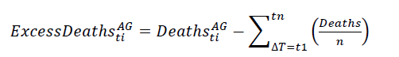
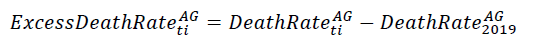
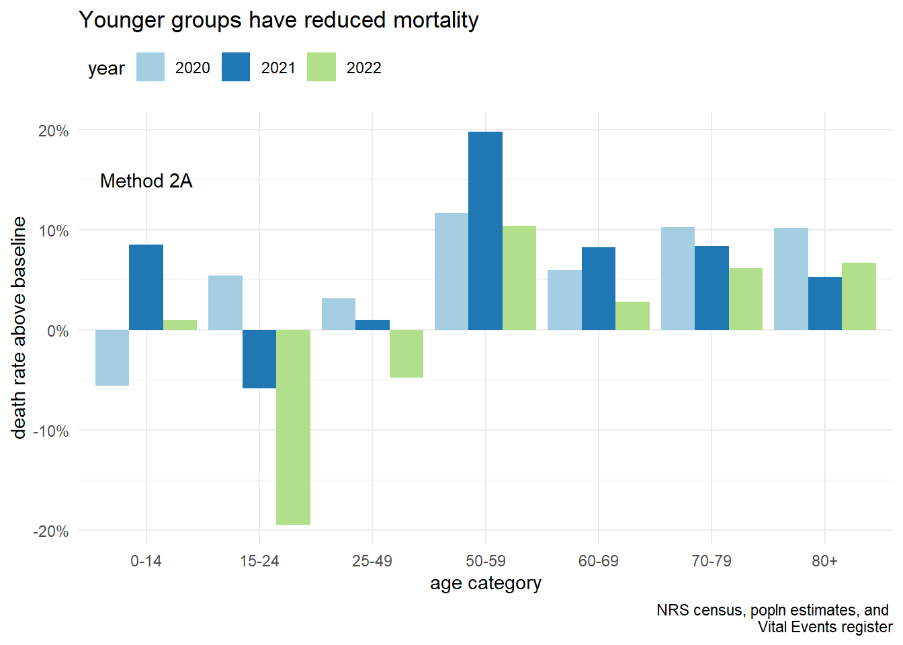
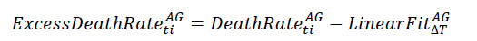

Calculate mortality rates per 10,000 persons for each age category
Method 1: Deaths in excess of the average

Compute the average number of deaths from 2015 to 2019, by age category.
Calculate difference from average, expressed as a percentage.
Code
avg_vec <- scot_mort[year %in%2015:2019, floor(mean(mort_count)), by = age_cat ][, V1]# extract years 2020 to 2022scot_mort_xs <- scot_mort[year %in%2020:2022, .(year, age_cat, mort_count)]# Excess mortality compared to average as a percentagescot_mort_xs[, mort_xs := (mort_count/avg_vec -1)*100, by = year] |>head() |>gt()
year
age_cat
mort_count
mort_xs
2020
0-14
226
-10.671937
2020
15-24
303
17.898833
2020
25-49
3286
7.631838
2020
50-59
4387
10.950936
2020
60-69
8167
6.382702
2020
70-79
15562
12.948178
Visualise
Code
scot_mort_xs[, year :=as.factor(year)]ggplot(data=scot_mort_xs, aes(x=age_cat, y=mort_xs, fill= year)) +geom_bar(stat="identity", position=position_dodge())+scale_fill_brewer(palette="Paired") +scale_y_continuous(labels = scales::percent_format(scale =1)) +labs(title ="older have greater excess deaths",subtitle =waiver(),caption ="NRS census, popln estimates, and \n Vital Events register",x ="age category",y ="death rate above average") +annotate(geom ="text", x ="0-14", y =15,label ="Method 1") +theme_minimal() +theme(legend.position='top', legend.justification='left',legend.direction='horizontal')
Code
# ggsave("./figures/method1-diff-avg.jpeg")
Method 2A: Difference from 2019 baseline

The baseline level is the 2019 numbers for each age group. Calculate the difference from the baseline, expressed as a percentage.
Code
# Set the base rate from year 2019 valuesbase <- scot_dt[year==2019, rate]# Create a baseline vector for the three years 2020 - 2022base <-rep(base, 3)# Calculate percent change relative to death rate for 2019scot_dt[year %in%2020:2022, xs_base :=round((rate/base-1)*100, 3)]scot_dt[year %in%2020:2023,] |>head() |>gt()
year
age_cat
mort_count
pop_count
rate
xs_base
2020
0-14
226
859790
26.285
-5.582
2020
15-24
303
623875
48.567
5.409
2020
25-49
3286
1781229
184.479
3.170
2020
50-59
4387
792457
553.595
11.649
2020
60-69
8167
653002
1250.685
5.974
2020
70-79
15562
484040
3215.024
10.274
Visualise
Code
scot_20_22 <- scot_dt[year %in%2020:2022,]scot_20_22[, year :=as.factor(year)]ggplot(data=scot_20_22, aes(x=age_cat, y=xs_base, fill= year)) +geom_bar(stat="identity", position=position_dodge())+scale_fill_brewer(palette="Paired") +scale_y_continuous(labels = scales::percent_format(scale =1)) +labs(title ="Younger groups have reduced mortality",subtitle =waiver(),caption ="NRS census, popln estimates, and \n Vital Events register",x ="age category",y ="death rate above baseline") +annotate(geom ="text", x ="0-14", y =15, label ="Method 2A") +theme_minimal() +theme(legend.position='top', legend.justification='left',legend.direction='horizontal')

Code
# ggsave("./figures/method2a-xs_base.jpeg")
Method 2C: Difference from linear trend

Linear Fit of Death Rate for years 2010 to 2019
Code
scot_lin_fit <- scot_dt[ year %in%c(2010:2019), ]# Visualize changes over timeg0 <-ggplot(scot_lin_fit[age_cat =="0-14", ], aes(x = year, y = rate)) +geom_point(size =3, shape=10)+geom_smooth(method = lm, se=FALSE) +stat_regline_equation(label.x =2016, label.y =38, size =5,aes(label =paste(after_stat(rr.label), sep ="~~~~"))) +# x-axis breaks for year from 2010 to 2022scale_x_continuous(breaks =2010:2019) +ggtitle("0 to 14 years")g15 <-ggplot(scot_lin_fit[age_cat =="15-24", ], aes(x = year, y = rate)) +geom_point(size =3, shape=10)+geom_smooth(method = lm, se=FALSE) +stat_regline_equation(label.x =2016, label.y =50, size =5,aes(label =paste(after_stat(rr.label), sep ="~~~~"))) +# x-axis breaks for year from 2010 to 2022scale_x_continuous(breaks =2010:2019) +ggtitle("15 to 24 years")g25 <-ggplot(scot_lin_fit[age_cat =="25-49", ], aes(x = year, y = rate)) +geom_point(size =3, shape=10)+geom_smooth(method = lm, se=FALSE) +stat_regline_equation(label.x =2016, label.y =160, size =5,aes(label =paste(after_stat(rr.label), sep ="~~~~"))) +# x-axis breaks for year from 2010 to 2022scale_x_continuous(breaks =2010:2019) +ggtitle("25 to 49 years")g50 <-ggplot(scot_lin_fit[age_cat =="50-59", ], aes(x = year, y = rate)) +geom_point(size =3, shape=10)+geom_smooth(method = lm, se=FALSE) +stat_regline_equation(label.x =2016, label.y =540, size =5,aes(label =paste(after_stat(rr.label), sep ="~~~~"))) +# x-axis breaks for year from 2010 to 2022scale_x_continuous(breaks =2010:2019) +ggtitle("50 to 59 years")g60 <-ggplot(scot_lin_fit[age_cat =="60-69", ], aes(x = year, y = rate)) +geom_point(size =3, shape=10)+geom_smooth(method = lm, se=FALSE) +stat_regline_equation(label.x =2016, label.y =1300, size =5,aes(label =paste(after_stat(rr.label), sep ="~~~~"))) +# x-axis breaks for year from 2010 to 2022scale_x_continuous(breaks =2010:2019) +ggtitle("60 to 69 years")g70 <-ggplot(scot_lin_fit[age_cat =="70-79", ], aes(x = year, y = rate)) +geom_point(size =3, shape=10)+geom_smooth(method = lm, se=FALSE) +stat_regline_equation(label.x =2016, label.y =3400, size =5,aes(label =paste(after_stat(rr.label), sep ="~~~~"))) +# x-axis breaks for year from 2010 to 2022scale_x_continuous(breaks =2010:2019) +ggtitle("70 to 79 years")g80 <-ggplot(scot_lin_fit[age_cat =="80+", ], aes(x = year, y = rate)) +geom_point(size =3, shape=10)+geom_smooth(method = lm, se=FALSE) +stat_regline_equation(label.x =2016, label.y =11400, size =5,aes(label =paste(after_stat(rr.label), sep ="~~~~"))) +# x-axis breaks for year from 2010 to 2022scale_x_continuous(breaks =2010:2019) +ggtitle("80 years and over")# Remove axis titles from all plotsg_all <-list(g0,g15, g25, g50, g60, g70, g80) %>%map(~.x +labs(x=NULL, y=NULL))